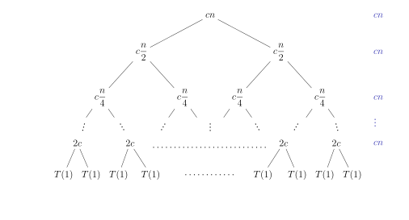
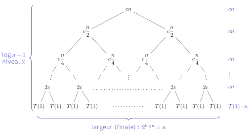

Informatique et Calcul Scientifique
Cours 9
Algorithmes de tri
Introduction
Problème : trier une liste
Problème : étant donnée une liste (de nombres, de strings…) de taille \(n\), trier les éléments de cette liste dans l’ordre croissant.
\[\texttt{L = [0, -3, 2, 4, 2]} \quad\longrightarrow\quad \texttt{L = [-3, 0, 2, 2, 4]}\]
- Ce problème peut être résolu par une multitude d’algorithmes.
- On présente plusieurs algorithmes qui, étant donnée une liste
L, la modifient pour en trier les éléments (comme le fait la méthodeL.sort()vue au Cours 4).
Pourquoi trier ?
- Au dernier cours, on a vu que la recherche binaire nécessite une liste triée et a une complexité \(\Theta(\log n)\), bien meilleure que la recherche linéaire \(\Theta(n)\).
- Si on va souvent chercher dans une liste, il vaut mieux la trier d’abord !
- Exemples de structures triées :
- Dictionnaires (les vrais) ordonnés par ordre alphabétique des mots
- Annuaires ordonnés par ordre alphabétique des noms
- Listes d’étudiants au SAC ordonnés par Sciper…
Tri par sélection
Tri par sélection : idée
- Idée : dans une liste triée, le premier élément est le plus petit, le deuxième est le deuxième plus petit, etc.
- Pour trier la liste, on va rechercher le plus petit élément et le mettre à la bonne place (en première position) ; puis rechercher le deuxième plus petit élément (le plus petit parmi ceux qui restent) et le mettre en deuxième position, etc.
- On fait donc grandir une sous-liste triée, en insérant à chaque fois le minimum des éléments restants à la fin de cette sous-liste.
Exemple interactif : visualgo.net/en/sorting
Tri par sélection : correctitude
Invariant de boucle (boucle extérieure) :
Au début de l’itération i, L[0], …, L[i-1] sont les i plus petits éléments de la liste donnée en entrée, triés.
- Initialisation : Au début de l’itération
i = 0, il n’y a encore aucun élément à placer : l’invariant est vrai.
- Maintenance : Supposons l’invariant vrai au début de l’itération
i. La boucle intérieure trouve le minimummdeL[i], …,L[n-1]: par l’invariant, c’est le \((i+1)\)ème plus petit élément. L’échange le place en positioni:L[0], …,L[i]sont lesi + 1plus petits éléments, triés. - Terminaison : À la sortie de la boucle (au début de l’itération
i = n, qui n’aura pas lieu),L[0], …,L[n-1]sont lesnplus petits éléments, triés : la liste entière est triée.
Tri par sélection : complexité
def tri_par_selection(L):
n = len(L)
for i in range(n): # n itérations
...
for j in range(i + 1, n): # n - i - 1 itérations
...- Nombre total d’itérations de la boucle intérieure (comme pour la somme maximale au Cours 7) : \[(n-1) + (n-2) + \cdots + 1 + 0 = \frac{n(n-1)}{2}.\] Le temps de parcours a donc complexité \(\Theta(n^2)\).
- Y a-t-il une distinction entre le pire des cas et d’autres cas ?
- Non : la boucle intérieure parcourt toujours
L[i+1], …,L[n-1], quelle que soit l’entrée. Le tri par sélection a toujours complexité \(\Theta(n^2)\).
- Non : la boucle intérieure parcourt toujours
Tri par insertion
Tri par insertion : idée
- Idée : trier une liste comme on trie une main à un jeu de cartes.
- On fait grandir une sous-liste triée, en insérant un élément à la fois à la bonne place dans cette sous-liste.
- Contrairement au tri par sélection,
L[0], …,L[i-1]ne sont pas forcément les \(i\) plus petits éléments, mais ce sont les mêmes \(i\) éléments qu’au départ, triés entre eux.
Exemple interactif : visualgo.net/en/sorting (choisir INS)
Tri par insertion : correctitude
Invariant de boucle (boucle extérieure) :
Au début de l’itération i, L[0], …, L[i-1] sont les mêmes i éléments qu’au départ, mais triés.
- Initialisation : Au début de l’itération
i = 0, il n’y a aucun élément : l’invariant est vrai.
- Maintenance : Supposons l’invariant vrai au début de l’itération
i. La bouclewhilefait descendreL[i]par échanges successifs tant qu’il est plus petit que son voisin de gauche : elle l’insère à sa bonne place parmiL[0], …,L[i-1], qui sont triés. Ainsi,L[0], …,L[i]sont les mêmes éléments qu’au départ, triés. - Terminaison : À la sortie de la boucle (au début de l’itération
i = n, qui n’aura pas lieu),L[0], …,L[n-1]sont les mêmes éléments qu’au départ, triés.
Tri par insertion : complexité
def tri_par_insertion(L):
n = len(L)
for i in range(n): # n itérations
j = i
while j > 0 and L[j] < L[j - 1]: # au plus i itérations
L[j], L[j - 1] = L[j - 1], L[j]
j = j - 1- Au pire des cas, la liste est triée en ordre décroissant (par exemple
[4, 3, 2, 1, 0]) : la bouclewhileitère alors exactement \(i\) fois à l’étape \(i\), soit au total \[0 + 1 + \cdots + (n-1) = \frac{n(n-1)}{2} \quad \text{itérations : complexité } \Theta(n^2).\]
Y a-t-il une distinction entre le pire des cas et d’autres cas ?
- Oui : la boucle
whiles’arrête dès queL[i]est à sa bonne place. Si la liste est déjà triée, elle n’itère jamais, et le tri par insertion a complexité \(\Theta(n)\).
- Oui : la boucle
Peut-on faire mieux que \(\Theta(n^2)\) ?
- Le tri par sélection et le tri par insertion ont tous les deux une complexité \(\Theta(n^2)\).
- Peut-on faire mieux ?
\(\Longrightarrow\) Oui, en utilisant un algorithme récursif : le tri par fusion.
Tri par fusion
Diviser pour régner
La structure
- On suppose qu’on a accès à un algorithme rapide de fusion, qui, étant donné deux listes triées, les fusionne en une seule liste triée.
Avec un tel algorithme, on peut écrire l’algorithme de tri récursif suivant : avec une liste de taille \(n\), on
- divise la liste en deux sous-listes de taille (approximativement) \(n/2\),
- trie récursivement chaque sous-liste,
- fusionne les sous-listes triées pour obtenir une version triée de la liste initiale.
- Le tri des sous-listes se fait récursivement, et les appels récursifs s’arrêtent pour les listes de taille \(\leq 1\) (cas de base).
Exemple pas-à-pas


Tri par fusion : Exemple A

Tri par fusion : Exemple B

Correctitude (idée)
- La correctitude de
tri_par_fusion(L, bas, haut)découle de la correctitude defusionet de la correctitude detri_par_fusionsur des instances plus petites (cas de base : une liste de taille \(\leq 1\) est déjà triée).
- La correctitude de
fusiondécoule de l’invariant de boucle suivant pour la bouclefor:
Au début de l’itération i, L[bas], …, L[i-1] sont les i - bas plus petits éléments de L1 et L2, triés ; et L1[L1_index] et L2[L2_index] sont les plus petits éléments de leurs listes respectives qui n’ont pas encore été copiés dans L.
def fusion(L, bas, milieu, haut):
L1 = copie(L, bas, milieu)
L2 = copie(L, milieu + 1, haut)
L1.append(float('inf'))
L2.append(float('inf'))
L1_index = 0
L2_index = 0
for i in range(bas, haut + 1):
if L1[L1_index] <= L2[L2_index]:
L[i] = L1[L1_index]
L1_index = L1_index + 1
else:
L[i] = L2[L2_index]
L2_index = L2_index + 1Complexité de fusion
- La taille de l’entrée est \(n = \text{haut} - \text{bas} + 1\), c’est-à-dire la longueur totale des deux listes à fusionner.
def fusion(L, bas, milieu, haut):
L1 = copie(L, bas, milieu)
L2 = copie(L, milieu + 1, haut) # Θ(n)
L1.append(float('inf'))
L2.append(float('inf'))
L1_index = 0
L2_index = 0
for i in range(bas, haut + 1): # Θ(n)
if L1[L1_index] <= L2[L2_index]:
L[i] = L1[L1_index]
L1_index = L1_index + 1
else:
L[i] = L2[L2_index]
L2_index = L2_index + 1Complexité de fusion
- La taille de l’entrée est \(n = \text{haut} - \text{bas} + 1\), c’est-à-dire la longueur totale des deux listes à fusionner.
- Les deux copies font \((\text{milieu} - \text{bas} + 1) + (\text{haut} - \text{milieu}) = n\) itérations : elles prennent un temps \(\Theta(n)\).
def fusion(L, bas, milieu, haut):
L1 = copie(L, bas, milieu)
L2 = copie(L, milieu + 1, haut) # Θ(n)
L1.append(float('inf'))
L2.append(float('inf'))
L1_index = 0
L2_index = 0
for i in range(bas, haut + 1): # Θ(n)
if L1[L1_index] <= L2[L2_index]:
L[i] = L1[L1_index]
L1_index = L1_index + 1
else:
L[i] = L2[L2_index]
L2_index = L2_index + 1Complexité de fusion
- La taille de l’entrée est \(n = \text{haut} - \text{bas} + 1\), c’est-à-dire la longueur totale des deux listes à fusionner.
- Les deux copies font \((\text{milieu} - \text{bas} + 1) + (\text{haut} - \text{milieu}) = n\) itérations : elles prennent un temps \(\Theta(n)\).
- La boucle
foritère \(n\) fois et prend donc un temps \(\Theta(n)\).
def fusion(L, bas, milieu, haut):
L1 = copie(L, bas, milieu)
L2 = copie(L, milieu + 1, haut) # Θ(n)
L1.append(float('inf'))
L2.append(float('inf'))
L1_index = 0
L2_index = 0
for i in range(bas, haut + 1): # Θ(n)
if L1[L1_index] <= L2[L2_index]:
L[i] = L1[L1_index]
L1_index = L1_index + 1
else:
L[i] = L2[L2_index]
L2_index = L2_index + 1Complexité de fusion
- La taille de l’entrée est \(n = \text{haut} - \text{bas} + 1\), c’est-à-dire la longueur totale des deux listes à fusionner.
- Les deux copies font \((\text{milieu} - \text{bas} + 1) + (\text{haut} - \text{milieu}) = n\) itérations : elles prennent un temps \(\Theta(n)\).
- La boucle
foritère \(n\) fois et prend donc un temps \(\Theta(n)\).
def fusion(L, bas, milieu, haut):
L1 = copie(L, bas, milieu)
L2 = copie(L, milieu + 1, haut) # Θ(n)
L1.append(float('inf'))
L2.append(float('inf'))
L1_index = 0
L2_index = 0
for i in range(bas, haut + 1): # Θ(n)
if L1[L1_index] <= L2[L2_index]:
L[i] = L1[L1_index]
L1_index = L1_index + 1
else:
L[i] = L2[L2_index]
L2_index = L2_index + 1fusion a la complexité \(\Theta(n) + \Theta(n) = \Theta(n)\).
Pour simplifier la suite, on suppose qu’il existe une constante \(c > 0\) telle que le temps de parcours de fusion est exactement \(cn\).
Complexité de tri_par_fusion : récurrence
- Soit \(T(n)\) le temps de parcours, au pire des cas, de
tri_par_fusionpour une entrée de taille \(n = \text{haut} - \text{bas} + 1\). On suppose que \(n = 2^k\), où \(k > 0\) est un entier.
def tri_par_fusion(L, bas, haut):
if haut - bas > 0:
milieu = (bas + haut) // 2
tri_par_fusion(L, bas, milieu) # T(n/2)
tri_par_fusion(L, milieu + 1, haut) # T(n/2)
fusion(L, bas, milieu, haut) # cn- On a alors la relation de récurrence :
\[\boxed{T(n) = 2T(n/2) + cn.}\]
Arbre de récurrence
\[T(n) = 2T(n/2) + cn\]





Résultat : \(\Theta(n \log n)\)
\[T(n) = cn \cdot \log n + T(1) \cdot n\]
- \(cn \log n\) est le terme dominant, donc
tri_par_fusiona complexité \(\Theta(n \log n)\).
- Plaçons-le dans la hiérarchie des complexités :


\(\Theta(n \log n)\) est strictement meilleur que \(\Theta(n^2)\) : le tri par fusion est asymptotiquement plus rapide que le tri par sélection et le tri par insertion.
Le passage de \(\Theta(n^2)\) à \(\Theta(n \log n)\) est significatif : pour \(n = 10^6\), on passe de \(10^{12}\) à environ \(2 \times 10^7\) opérations.
Comparaison et résumé
Comparaison des algorithmes de tri
| Algorithme | Complexité | Mémoire supplémentaire |
|---|---|---|
tri_par_selection
|
\(\Theta(n^2)\) | \(\Theta(1)\) (sur place) |
tri_par_insertion
|
\(\Theta(n^2)\) | \(\Theta(1)\) (sur place) |
tri_par_fusion
|
\(\Theta(n \log n)\) | \(\Theta(n)\) |
-
tri_par_selectionettri_par_insertiontrient sur place, alors quetri_par_fusiona besoin d’un espace de travail \(\Theta(n)\) en mémoire (les copiesL1etL2). -
La constante qui se cache dans la notation \(\Theta(\cdot)\) pour
tri_par_fusionest assez grande. En pratique, pour de petites valeurs de \(n\),tri_par_insertionest l’algorithme à préférer. -
L’algorithme utilisé par la méthode
sortet la fonctionsortedde Python est Timsort : c’est un algorithme hybride basé sur le tri par fusion et le tri par insertion.
Optimalité du tri par fusion
- Tous les algorithmes que nous avons vus sont basés sur la comparaison de paires d’éléments.
- On peut prouver que tout algorithme basé sur la comparaison de paires d’éléments nécessite au moins de l’ordre de \(n \log n\) comparaisons pour trier une liste de taille \(n\).
- Le tri par fusion est donc asymptotiquement optimal parmi les algorithmes qui comparent des paires d’éléments.
- Si on a plus d’informations sur les données de la liste, par exemple si on sait que tous les éléments sont des entiers entre 0 et une constante \(K\), on peut trier en \(\Theta(n)\) (sans comparer d’éléments).